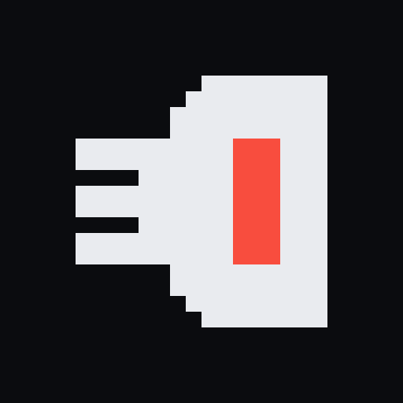

A/004 /
Rebuilt: the new derjyn.github.io
Site Design Corpus
This rebuild was long overdue. D3 Labs had been the site since 2016, and I wanted a more complete space: somewhere to showcase my projects, share my thoughts, and hand out loot I think others might enjoy.
The site is new from the ground up: new look, new mark, new code underneath. This is the short tour of what changed and how it got here.
Built on Corpus
Every page here runs on Corpus, a raw CSS stack I'm building for small static sites: Detox resets the browser, Bones lays out the page, Flesh dresses it, and a skin gives it this look. No framework, no build step for the CSS, and the pages read fine with JavaScript off.
Why build my own instead of grabbing an existing one? The practice, for one. It's also my own opinionated design, and I don't need the bloat that comes with the other "micro" frameworks.
The site is also Corpus's first real test. Anything this site needed that Corpus couldn't do became a fix in Corpus, not a hack here.
The look: an instrument panel
The design is an industrial instrument panel with a retro display soul. It pulls from the cyberpunk genre in general, the books, films and games, and from my love of industrial UI. Every section is a module in a thin frame with a square node on each corner, a lamp and a name in its header, and an ID on the right. The nav keys are hardware keys with a lamp that lights on the section you're in.
It took seven moodboards to get here. The early ones put scanlines, grain and color fringing over everything, and they were hard to read. From the fifth board on, the retro effects touch display elements only (the wordmark, big numbers, images) and body text stays crisp.
Two grounds, one signal
There are two looks, flipped with the theme setting. Glass is near-black with a cool off-white ink and is the main one. Paper is a warm stone stock with near-black ink. Both share one palette, Vermilion: the vermilion signal marks what is live (the current key, lamps, the newest entry) and nothing else.
Why vermilion? Several themes were tested, and it just felt right. Plus I love that general color mix. Two of the others, Sodium and Mosaic, made it as far as the last moodboard and lost.
The mark

The mark is the old derjyn.com prototype mark, redrawn on a 16 by 16 grid and picked from 23 drafts. Three teeth on a stem read as a mirrored E, the Ǝ in the stylized name, and the flat-backed head with its one tall eye reads as a D, a 3 and a cyclops skull at once. Turn it upright and it's a plain skull.
It's only ever drawn at 16, 32, 64 or 128 pixels, so every cell lands on whole pixels and stays sharp.
The name has its own font too. The stylized spelling started with me, a character map, and a lot of tinkering with ways to make "Derjyn" look cool; ƊƎƦĴҰŊ is where that landed. The wordmark text is the plain word "Derjyn", so search, copy and paste, and screen readers all get the real word, but it's set in a tiny custom font that draws it as ƊƎƦĴҰŊ.
The background
Behind the page is a live lattice: X-shaped arms around small nodes, faint at rest. Move the cursor and the arms along its path light up and slowly fade. Click on empty space and a ping ring runs out from the click. The content boxes block the rings and bounce weaker copies back, a little like ripples on water.
Config switches it to Field, a dot grid with slow bands that part around the cursor, or turns it off. With Sound on, each mode has its own click sound, synthesized in an old little tool called ChipTone. Visitors don't expect a site to make noise, so it's off by default.
With reduced motion set in your system, the background draws one still frame and nothing follows the cursor.
What's next
Coming up in the Log: future plans, for the site and for the projects.